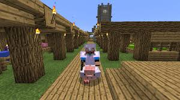

|
М А Й Н К Р А Ф Т |
|||||||
|
-------------------
ГОЛОВНА ІНФА ------------------- |
--------------------------------------------------------------------------------------------------------------------------------------------------------- Трюки й хитрості --------------------------------------------------------------------------------------------------------------------------------------------------------- Ця стаття - про деякі хитрості й трюки, які Ви можете застосовувати під час гри. Мирна складність Не можете здолати орди зомбі? Занадто повільні , щоб розправитися з павуками ? Побоюєтеся , що кріпер і мандрівники Краї не залишать від Вашого будинку і каменя на камені ? Мало здоров'я і зовсім ні їжі? Натисніть Esc , поставте складність на " Мирну " , і ось воно - вирішення всіх ваших проблем! Здоров'я починає дуже швидко відновлюватися , ситість не убуває , ворожі моби чи не з'являються ! Цей прийом дуже сильно допомагає в самому початку гри і при зведенні великих споруд , але багато гравців вважають цей прийом нечесним , так як він прибирає велику частину небезпек світу Minecraft , і отже , інтерес до подальшого продовження гри. Рубка дерев Якщо вам хочеться зрубати дерево цілком , але Ви не можете дістати до верху , спробуйте залишити самий нижній блок дерева недоторканим (як пень ) , залізти на нього , зрубати дерево і потім добути блок під собою . Якщо Ви все ще не можете дістати до верхнього блокадревесіни , то встановіть під собою який-небудь легкоразрушаемий блок (земля ілішерсть , наприклад) щоб виявитися ще вище. Для гігантських дерев джунглів зі стовбуром товщиною у два блоки можна або спробувати піднятися на саму вершину дерева по ліанах , або вирубати всередині цього дерева своєрідну кручені сходи , піднятися по ній вгору і добути вже все дерево цілком. При будівлі ферми дерев віддавайте перевагу деревам джунглів: вони дають найбільше деревини. Наступними йдуть берези: вони не виростають вище семи блоків у висоту, і способом , описаним вище , можуть бути зібрані цілком. Іноді незручно добувати ялини ( сосни ) і дуби : їли часто виростають занадто високо , а дуби іноді виходять розлогими ( зрубати їх найважче ) . Щоб спростити процес , поставте твердий блок над саженцемна висоті 5-7 від землі , тоді дерево виросте невеликим. Автоматизація Намагайтеся користуватися пристосуваннями і механізмами ( автоматичними фермами , генераторами , мобофермамі ... ) На даний момент це ефективний спосіб заощадження часу і сил. На їх установку часто витрачається значна кількість часу , але надалі вони багаторазово себе окуповують . Для всіх цих пристосувань є окремі гайди , тому перераховувати їх тут немає сенсу. Використання ліжок Якщо Ви дуже часто перебуваєте підлягає далеко від дому ( подорожуючи , займаючись полюванням , складанням карт , пошуком цінних ресурсів і біомів ) , то беріть з собою ліжко . Як тільки починає темніти , встановлюйте її і засинайте . Пропускати таким чином ніч значно безпечніше , так як ворожі моби можуть вам перешкодити або навіть убити вас , і в темряві легко прогледіти небудь цінне або важливе ( вхід до печери або відповідний схил для підйому на гору , наприклад). Блокуйте виснажені секції шахти У підземних шахтах дуже легко заблукати і дуже довго блукати по тих місцях , де Ви вже все давно здобули. Щоб уникнути цього , огороджують закінчені секції шахт або вже досліджені частини печер. В ідеалі найкраще огороджувати їх чим-небудь прозорим ( склом , парканом , залізними гратами ) , таким чином Ви зможете побачити ворога якщо він там з'явиться ( знак того , що або Ви недостатньо висвітлили шахту , або прогледіли десь прохід в іншу печеру ) . Також рекомендується огороджувати проходи тими блоками , які не зустрічаються під землею ( наочний приклад: Ви зустріли в печері стіну з кругляка . Як ви зрозумієте , що це: ваша перегородка або стіна скарбниці ?) . Використання кісткового борошна Після того , як Ви отримали шерсть всіх потрібних вам квітів і приручили то кількість вовків , яке вам потрібно, у кісток залишається тільки одне застосування : кісткова мука. Вона дозволяє моментально (до 13w05a ) виростити будь-яку рослину Minecraft , що знаходиться у відповідних умовах . Намагайтеся завжди тримати пару кісток про запас. За допомогою кісткового борошна можна виростити квіти , гриби і високу траву , що дуже важливо при видобутку барвників і виживанні в суперплоского світі. Використавши три одиниці кісткового борошна (які можна отримати з однієї кістки) на трьох паростках пшениці і зібравши їх, можна отримати три одиниці пшениці , яких вистачить на виготовлення буханки хліба ( може стане в нагоді як аварійне джерело їжі). Правильно розташувавши коричневий і червоний гриби , удобривши їх борошном і зібравши отримані величезні гриби можна отримати безліч грибів для тушкування. Також борошном можна миттєво виростити саджанці і стовбури кавунів і гарбузів. Використовуйте ці можливості з розумом , і вам більше не доведеться чекати того моменту , коли виростуть ваші рослини на фермах. Орієнтування на місцевості Намагайтеся відзначати ваш шлях якими-небудь знаками : факелами , рукотворними блоками , кольоровою вовною , доріжкою з піску / гравію або червоного пилу , квітами , і так далі. Це відніме у вас якийсь час , але потім вам буде набагато простіше орієнтуватися. Також рекомендується встановити дорожні знаки на розвилках або перехрестях . А ще краще записуйте координати певних місць ( свого будинку , скарбниць , шахт і т. п. , щоб не втратити потрібне вам місце). Дізнатися свої координати можна приходячи в певне місце (яке не хочеться втрачати ) , і натиснувши клавішу F3 клавіатурі. Далі , запишіть ці координати (у блокнот, на листочок ) або зніміть скріншот. Збір кактуса і очерету Найшвидший спосіб зібрати кактус або очерет - видалити його нижній блок , тоді все рослина випаде у вигляді предметів . На фермах очерету краще видаляти другий блок знизу , так як інакше вам потім знадобиться висаджувати його знову. З кактусами найкраще розбивати нижній блок , бо інакше є ймовірність , що випадають блоки впадуть на нижній і зникнуть. Прискорення крафта Намагайтеся завжди Крафт рівне кількість предметів , щоб запобігти засмічення інвентарю непотрібними речами. Наприклад , вам потрібен паркан . З одного блоку древесіниполучается чотири дошки , які дають вісім палиць , з яких, у свою чергу , виходять два блоки паркану і дві палиці. Але якщо створити вісім блоків паркану за раз , то Ви витратите рівно три блоки деревини ( 12 дощок , 24 палки) і таким чином не залишите зайвих палиць. Як варіант можна скрафтіть з решти дощок і палиць небудь потрібне (наприклад , факели або рукоятку для інструмента). Використання барвників Набагато економніше не фарбувати вовну, а фарбувати відразу саму вівцю. По-перше , одним барвником можна пофарбувати тільки один блок вовни , а з фарбованої вівці випаде від одного до трьох блоків вовни за раз. По-друге , після відновлення вовни вівця збереже свій колір , що дозволить вам і далі отримувати шерсть цього кольору. По-третє , якщо розмножити дві вівці однакового кольору , то з'явиться ягня такого ж кольору. Генератор смарагдів - село ? Припустимо , Ви хочете добути смарагди , заради цього шукали гори , копали шахту і знайшли ... 13 смарагдів ? Є простий спосіб добути смарагди , потрібно лише знайти село NPC з фермами ( які є практично в кожному селі , зазвичай у великих кількостях) , почекати , поки на фермах виросте пшениця , зібрати її ( на порожні грядки не забудьте посадити насіння ) і продати фермеру , потім знову чекати і збирати врожай. Таким чином села фактично є нескінченним генератором смарагдів , а тому насіння випадають в кількості від 1-2 і більше, можна зробити кілька нових ферм , щоб збільшити кількість видобутої пшениці ( за один смарагд потрібно віддати ~ 20 шт. пшениці). Житель може закрити операцію , але крім пшениці можна продавати багато чого , наприклад шерсть. Також дуже вигідно продавати підписані книги священика - по одній книзі за смарагд. Це буде значно вигідніше , ніж продавати непідписані книги по 10 штук за смарагд.
Зачарування Зачарування предметів може принести чималу користь. Нехай дорогі заклинання ( Шовкова торкання або Мародерство , наприклад) і ефективні тільки на алмазних інструментах ( у алмазних інструментів найбільша міцність , і отже , довше зберігають свої властивості) , але отримати 2-3 рівень дуже просто , і його цілком вистачить на те , щоб зачарувати ваш залізний інструмент недорогим заклинанням ( Ефективність або Гострота , наприклад). щоб не вийшло так , що Ви Зачарований алмазний меч на непотрібний вам ефект , зачаровує книги , а потім " сумістите " книгу та інструмент на ковадлі . При цьому доведеться витратити більше досвіду і книгу , але зате книгу викинути легше дорогого інструменту. "Шовкове торкання" Зачарування "Шовковe торкання" може виявитися вкрай ефективним . Наприклад , при видобутку каменю кирка , зачарована цим заклинанням , добуде відразу камінь , а не булижник , таким чином заощадивши вам паливо , потрібне для переплавки кругляка на камінь. Інший приклад: при видобутку червоної руди або лазуриту ви отримаєте багато відповідних предметів , в той час як тієї ж киркою із заклинанням можна добути блок руди , який займе набагато менше місця в інвентарі , і потім вдома його можна встановити і розбити киркою із заклинанням "Удача " для максимального прибутку . Перли Краю Після того , як перли Краю був здобутий в значних обсягах , його можна використовувати для швидкого переміщення на далекі дистанції. Рекомендується використовувати разом з зачарованої бронею , особливо з черевиками , зачарованими заклинанням " Невагомість " ( це знизить втрата від телепортації . ) . Використання кресала
Використання печей Печі робляться з дуже доступного матеріалу - кругляка , тому робіть багато ( як мінімум шість , в ідеалі - 9-12 ) печей. Це дозволить значно прискорити переплавку предметів . Також , якщо ви топіть печі вугіллям , переплавляли то кількість предметів , яке ділиться на вісім . Це запобіжить розтрату палива. Якщо залишилися ще непереплавленого предмети , то використовуйте як паливо дошки , саджанці та палиці. Двома саджанцями або палицями можна переплавити один предмет , двома дошками - три. Також варто використовувати як паливо непотрібні дерев'яні інструменти, зроблені на початку гри. Лава як зброя Відро лави цілком може використовуватися як зброя . Виливання лави на спаунер мобів , знищення їй всіх ворогів , збір лави і знищення спаунера займе набагато менше часу , ніж спроба прорватися через орди монстрів. Втім, такий спосіб знищення ворогів позбавляє вас досвіду і дропа з мобів . Створення карт Карта - дуже корисна річ , так як вона дозволяє дізнатися , де саме Ви знаходитесь . Але є один мінус: карту можна оновлювати тільки тримаючи в руці , і при цьому вона загороджує більшу частину екрана . Втім , ця проблема вирішується або натисканням F1 ( ця клавіша прибирає HUD ), або F5 (включає вид від третьої особи) . Також , якщо частина території , яку ви збираєтеся досліджувати - узбережжя , то можна створити човен і поплисти на ній уздовж берега. Подорожувати на човні швидше і безпечніше , ніж вплав або пішки , карта при цьому описує те , що перебуває біля узбережжя , і якщо залишилися ще "білі плями" , то можна дослідити їх пішки або проплисти туди по річці. Також рекомендується не заходити в джунглі , а обходити їх по кордону з іншими Біома (через джунглі дуже важко переміщатися з причини великої кількості перешкод ( великі дерева , входи в печери , пагорби , кручі ...)) . Дослідіть джунглі , тільки якщо вони не дуже великі , щоб бути дослідженими таким чином , і ви хочете дослідити їх цілком. Використання зіль Після того , як Ви добули пекельного наросту , вогненний стрижень і скрафтілі варильну стійку , Ви можете значно полегшити собі життя , використовуючи зілля : зілля моментального лікування і регенерації можуть врятувати вам життя (а їх вибухові версії - ще й поранити зомбі і скелетів , а також підлікувати вовків і кішок), зілля сили - швидше знищувати ворогів , зілля швидкості збільшить вашу швидкість (автор цієї правки за 1 день , використовуючи зілля прискорення і спринт , подолав близько півтори тисячі метрів у суперплоского світі) , зілля вогнестійкості нейтралізує шкоди від лави , вогню , ифрита і Гаст , а вибухові зілля можуть використовуватися для вбивства і ослаблення мобів . Швидкий видобуток гравію та піску Там , де це можливо і виправдано , намагайтеся розмістити факел під стовпом гравію чи піску і видалити блок над факелом . Гравій або пісок впаде на факел і випаде в відепредметов . Цей метод корисний у тих випадках , коли вам потрібен гравій ( для ландшафтних робіт або засипання озера лави , наприклад) , але робить цей спосіб марним при видобутку кременю. Видобуток смаженого м'яса Для швидкого отримання смаженої свинини або яловичини без витрат палива і часу потрібно 1 відро з лавою. Просто виливаємо лаву на мобу і тут же збираємо назад. Зі сгоревшейсвіньі чи корови падає не сире , а смажене м'ясо. Такий трюк можна зробити навіть без грубки під рукою , перебуваючи далеко від дому. Можна підпалити блок під або поряд з жівотнимзажігалкой , але з витратою ресурсу запальнички або вогненної кулі . Також можна вбивати свиней , корів або курок мечем , який зачарований на «Аспект вогню» та / або « Займання » на будь-яку стадію. При цьому тварини будуть спалахувати , і при їх смерті з них буде випадати вже смажена їжа. Використання табличок Таблички можуть застосовуватися як дорожні знаки , покажчики , " напоминалки " про те , що Ви збиралися робити в тому місці , де її поставили , попередження про небезпеку ( "Обережно! Лавове озеро через 20 м " ) і так далі. Також таблички не дають текти воді і лаві , що може використовуватися в побудові механізмів . Використання приручених тварин Якщо Ви не використовуєте кресало при полюванні , але маєте кількох приручених вовків , візьміть їх з собою на полювання. Один удар по будь-якому мобу (за винятком кріпер ) перемкне увагу вовків на цього мобу , і вони швидко вб'ють його , залишивши вам його дроп і досвід. Також , якщо Ви зустріли оцелотів , постарайтеся приручити їх : коти відлякують кріпер , через що можуть використовуватися як відлякувач кріпер вдома або на полюванні. Використання ТНТ ТНТ корисний при розчищенні місцевості , особливо якщо блоки , знищувані їм , не мають особливої цінності. Один блок вибухівки може знищити з десяток блоків землі , гравію іліпеска , а чотири - розчистити невелику печеру набагато швидше , ніж це робили б Ви . Попередження : не рекомендується використовувати поруч з вашими будівлями , а також поряд з рудами і глибоко під землею (цінні руди можуть бути безповоротно втраченими при вибуху) . Також ТНТ корисний у цілях пересування. Приклад однієї з хитрості пересування за допомогою динаміту : розставити ТНТ кругом , щоб посередині залишилося місце розміром 2х2 блоку. Вільне місце заповнити водою і сісти всередину ( на всякий випадок краще бути одягненим в броню ) і , якнайшвидше запаліть динаміт. Попередження : найкраще проводити операцію на льоду , на маленькому острівці або біля води . Використання інструментів Завжди використовуйте найкращі інструменти , які можете дозволити. Попередження : якщо Ви тільки почали гру, і у вас всього кілька залізних злитків , Ви не можете дозволити собі все залізні інструменти , так як для повного комплекту інструментів, у тому числі й мотики потрібно 11 злитків. Рекомендується зберегти їх для залізної кирки , меча і кіраси і використовувати в основному кам'яні інструменти . Уникнути смерті Якщо Ви випадково звалилися в прірву або впали з кручі , негайно ставте гру на паузу і виходите в головне меню. Потім заходите в гру , пролітаєте ще частину відстані і виходите. Повторювати , поки висота не знизиться до безпечного для життя . Справа в тому , що при вході в гру , набрана до цього швидкість не зберігається. Тобто , навіть якщо Ви впали з висоти 100 блоків , увійшовши у гру коли до землі залишиться 2 блоку , Ви не отримаєте ніякої шкоди . Використання води
Використання торгівлі
Не беріть з собою цінні предмети Намагайтеся не брати в подорожі і в печери цінні предмети , наприклад алмазні. Якщо ви помрете , то вони загубляться , а знайти нові буде складно. Наприклад згорять в озері лави або зникнуть далеко від будинку , або їх можуть використовувати моби ( Зомбі надіне вашу броню і буде бити вас вашим мечем. ) . Використовуйте скрині Краї , щоб зберегти цінні предмети. |
-----------------------
ЗМІСТ -----------------------
|
|||||